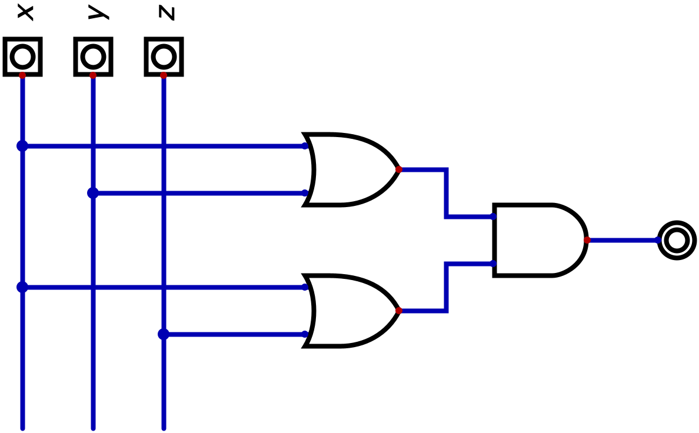

Definizione - Ritardo complessivo di una rete combinatoria
Dato che l'astrazione della tabella della verità nasconde il ritardo di propagazione del gate reale (che può cambiare da una tecnologia ad un'altra, ma anche in base al valore di "partenza"), risulta quindi utile considerare il ritardo \( \tau_{p}\) equivalente al caso peggiore possibile.
Seguendo questo ragionamento, si considera il ritardo complessivo della rete come la somma dei ritardi presenti sul percorso più lungo.
Seguendo questo ragionamento, si considera il ritardo complessivo della rete come la somma dei ritardi presenti sul percorso più lungo.
Definizione - Complessità di una rete combinatoria
Per confrontare la complessità e la velocità di risposta di reti combinatorie si valutano tre indicatori:
- \( n_{gate}\), ovvero il numero di gate (maggiore è questo numero, più complessa è la rete);
- \( n_{conn}\), ovvero il numero totale di ingressi dei gate (maggiore è questo numero, più complessa è la rete);
- \( n_{casc}\), ovvero il massimo numero di gate disposti in cascata (minore è questo numero, più veloce è la rete).
Osservazioni personali - Ad esempio
Consideriamo la rete \( x + (y \cdot z)\), la cui rappresentazione è la seguente  si ha che tale rete ha le seguenti caratteristiche: si hanno invece le seguenti caratteristiche:
si ha che tale rete ha le seguenti caratteristiche: si hanno invece le seguenti caratteristiche:
- \( n_{gate} = 3\);
- \( n_{conn} = 4\);
- \( n_{casc} = 2\).

- \( n_{gate} = 3\);
- \( n_{conn} = 6\);
- \( n_{casc} = 2\).
Definizione - Ottenere reti di costo minimo
Consideriamo per ipotesi di avere:
Considerando il principio di funzionamento delle espressioni canoniche (dove è sufficiente che un mintermine (o un maxtermine) si "attivi" affinchè si "attivi" il circuito), può essere utile utilizzare dei termini che riconoscano più di una configurazione (ovvero gli implicanti e gli implicati).
- ingressi disponibili sia in forma vera che in forma negata;
- fan-in dei gate a piacere
- con numero massimo di gate in cascata pari a \( 2\);
- con il minimo numero di gate;
- con il minimo numero di ingressi per i gate.
Considerando il principio di funzionamento delle espressioni canoniche (dove è sufficiente che un mintermine (o un maxtermine) si "attivi" affinchè si "attivi" il circuito), può essere utile utilizzare dei termini che riconoscano più di una configurazione (ovvero gli implicanti e gli implicati).
Definizione - Implicante e implicante primo
Un implicante è un termine prodotto di \( n\) o meno variabili (dove \( n\) è il numero di ingressi della rete) che assume il valore \( 1\) solo per configurazioni in cui la funzione vale \( 1\) o indifferenza (ovvero vale \( 1\) in tutte quelle configurazioni che sono descritte dall'implicante).
Un implicante primo è invece un implicante che cessa di essere tale rimuovendo un qualsiasi suo letterale.
Un implicante primo si dice essenziale se esiste almeno un mintermine che non è coperto da nessun altro implicante primo (ovvero se per almeno un \( 1\) (senza considerare i \( -\)) tale implicante è l'unico implicante primo che lo descrive).
Un implicante primo è invece un implicante che cessa di essere tale rimuovendo un qualsiasi suo letterale.
Un implicante primo si dice essenziale se esiste almeno un mintermine che non è coperto da nessun altro implicante primo (ovvero se per almeno un \( 1\) (senza considerare i \( -\)) tale implicante è l'unico implicante primo che lo descrive).
Osservazioni personali - Ad esempio
Considerando la seguente tabella della verità
Consideriamo ora i termini a due ingressi, si ha che sono: \[ a' \cdot b' \mid a' \cdot b \mid a' \cdot c \mid a \cdot c' \mid b' \cdot c' \mid b \cdot c \] ovvero si ha che tutte le configurazioni che presentano i bit \( a\) e \( b\) a \( 0\) (ovvero \( a'\), \( b'\)) hanno come configurazione di uscita \( 1\) o indifferenza (e così via).
Considerando infine i termini ad un ingresso, si ha \[ a' \] Di tutti questi implicanti, si ha che solo \[ a' \mid b' \cdot c' \mid b \cdot c \] sono implicanti primi. in quanto (ad esempio) nel caso \( a' \cdot b\) si ha che rimuovendo \( a'\) cessa di essere un implicante ma rimuovendo \( b\) no, quindi si ha che non è un implicante primo.
Di questi implicanti primi, si ha che:
si ha che i mintermini (ovvero tre ingressi) sono \[ a' \cdot b' \cdot c' \mid a' \cdot b' \cdot c \mid a' \cdot b \cdot c' \mid a' \cdot b \cdot c \mid a \cdot b' \cdot c' \mid a \cdot b \cdot c \] ovvero tutti i termini che hanno \( 1\) o \( -\) come uscita.
Consideriamo ora i termini a due ingressi, si ha che sono: \[ a' \cdot b' \mid a' \cdot b \mid a' \cdot c \mid a \cdot c' \mid b' \cdot c' \mid b \cdot c \] ovvero si ha che tutte le configurazioni che presentano i bit \( a\) e \( b\) a \( 0\) (ovvero \( a'\), \( b'\)) hanno come configurazione di uscita \( 1\) o indifferenza (e così via).
Considerando infine i termini ad un ingresso, si ha \[ a' \] Di tutti questi implicanti, si ha che solo \[ a' \mid b' \cdot c' \mid b \cdot c \] sono implicanti primi. in quanto (ad esempio) nel caso \( a' \cdot b\) si ha che rimuovendo \( a'\) cessa di essere un implicante ma rimuovendo \( b\) no, quindi si ha che non è un implicante primo.
Di questi implicanti primi, si ha che:
- \( a'\) è un implicante primo essenziale, in quanto per le configurazioni \( 001\) e \( 010\) è l'unico implicante valido;
- \( b' \cdot c'\) non è un implicante primo essenziale, in quanto descrive solo la configurazione \( 000\) che è già descritta da \( a'\). Descrive inoltre la configurazione \( 100\) che tuttavia ha come risultato \( -\).
- \( b \cdot c\) è un implicante primo essenziale, in quanto è l'unico a descrivere la configurazione \( 111\).
Definizione - Implicato e implicato primo
Un implicato è un termine somma di \( n\) o meno variabili (dove \( n\) è il numero di ingressi della rete) che assume il valore \( 0\) solo per configurazioni in cui la funzione vale \( 0\) o indifferenza (ovvero vale \( 0\) in tutte quelle configurazioni che sono descritte dall'implicato).
Un implicato primo è invece un implicato che cessa di essere tale rimuovendo un qualsiasi suo letterale.
Un implicato primo si dice essenziale se esiste almeno un maxtermine che non è coperto da nessun altro implicante primo (ovvero se per almeno uno \( 0\) (senza considerare i \( -\)) tale implicato è l'unico implicato primo che lo descrive).
Un implicato primo è invece un implicato che cessa di essere tale rimuovendo un qualsiasi suo letterale.
Un implicato primo si dice essenziale se esiste almeno un maxtermine che non è coperto da nessun altro implicante primo (ovvero se per almeno uno \( 0\) (senza considerare i \( -\)) tale implicato è l'unico implicato primo che lo descrive).
Definizione - Espressione minima
L'espressione minima ottenibile per una qualsiasi tabella della verità è la somma di implicanti primi essenziali nel caso SP, mentre è il prodotto degli implicati primi essenziali nel caso PS.
Per ottenere l'espressione minima esistono sia metodi algoritmici, eseguiti solitamente da un calcolatore, che metodi grafici, eseguibili manualmente dall'essere umano.
Per ottenere l'espressione minima esistono sia metodi algoritmici, eseguiti solitamente da un calcolatore, che metodi grafici, eseguibili manualmente dall'essere umano.